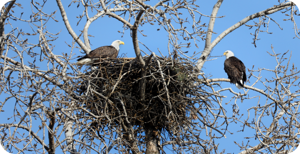

There are two eagles in the Bulk Farm, this pair is called the cranbury neck eagles since they are located off cranbury neck road. They built the nest together years ago. An average nest is between 4-5 feet in diameter and 2-4 feet deep. They expand the nest by about 1-2 feet each year.
70-80% of eagles die before they reach adulthood at five years of age. An eagle that makes it to adulthood might live 20-25 years. In captivity, eagles are able to live up to 50 years old due to the controlled environment.
Bald eagles typically eat fish but they will eat a variety of other animals and birds. Their prey items include waterfowl and small mammals like squirrels, prairie dogs, raccoons and rabbits. Bald eagles are opportunistic predators meaning that in addition to hunting for live prey, they will steal from other animals (primarily from other eagles or smaller fish-eating birds) or scavenge on carrion.